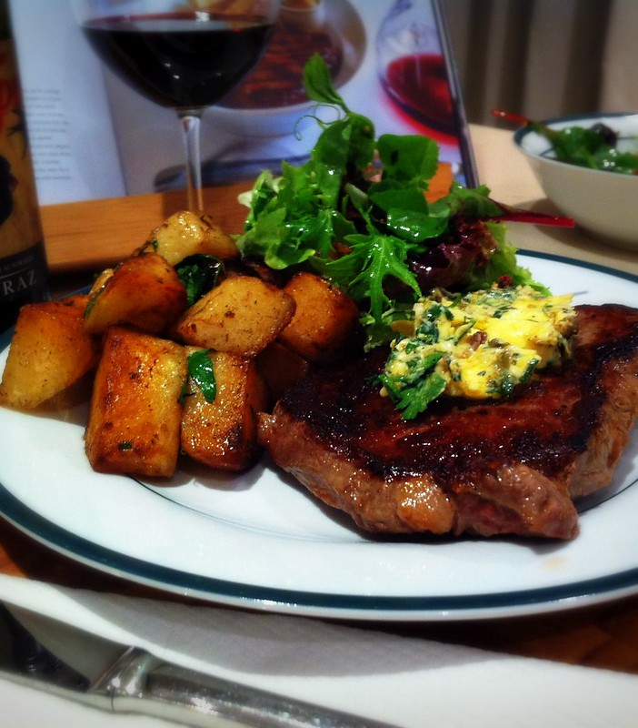
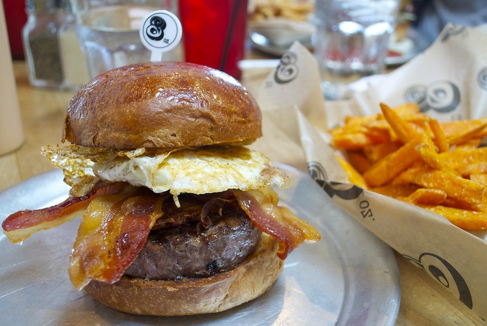

The shrimp are fairly easy to construct. The key to this recipe is to make sure you don't overcook the shrimp, and the glory of the taste lies in the sauce at the end.
First you want to make sure the shrimp are dethawed and then pat them dry. Once the shrimp are dried they will be able to hold the tossing of the cornstarch and flour much better.
As you could guess, you want to mix the cornstarch and flour and then give a decent coating to all the shrimp. From there make sure you start heating the oil to fry the shrimp.
Next while the oil is heating lets start prepping the sauce. Mix the honey, mayo, and brown sugar together. It should have a thick concistency and a sweet taste. By the time thats done test the oil
and make sure everything is heated, if so start cooking your shrimp. The shrimp will only take a few minutes, be sure not to overcook them and dry them out. Probably only cook them for around 3 or 4 minutes.
The coating should turn a flaky, golden color but still be rigid. Take the shrimp out when done and place them into a bowl that has paper towel at the bottom, this will help absorb some of the risidual oil that
has been left on the outside. Finally, once all the shrimp are cooked spread your sauce into a pan over medium heat, then add the shrimp back to the pan. Make sure you add the sauce when the pan is cold
and toss the shrimp in the cold pan, then as the coated shrimp reheat slightly the heat will help transform the flavor of the sauce. Only reheat the coated shrimp for a few minutes.
Steak & Potatoes

Ingredient
Needed Amount
New York Strips
2 Cuts
Unsalted Butter
1 stick
Garlic
2 Cloves
Russet Potatoes
3-Large
One of the most savory, delicious meals you can make is steak! They have an amazing taste, a light texture, and really show off the cooking skills of those
who really have an eye for cooking. Some prepping you can do for this is to take the steak out and let it rest until it comes to room temperature. Then season both sides how you see fit. You can also wash and cut potatoes into chunks as if you were eating a roasted potato.
Start by heating up a pan with just a little oil at the bottom so that the butter won't burn when you put it in. Make sure that the temperature on the oven is set to high, if you cook at too low of a temperature you could make the steak a little chewy, which is not what we are aiming
to achieve. While the oil in the pan heats up, crush the garlic with the side of a knife and take out the cloves. Make sure you crush these so you get all the fragrence and beautiful
flavor inside the garlic. Finally, add the steak to the pan with the whole stick of unsalted butter. You want these to sit in the pan and rest. Be sure to not move the steak, but while it cooks on one side for roughly 3 to 6 minutes baste the butter onto the
top of the steak. This helps make sure the steak is nice and tender and gives it alot of the flavor that seeps out while it cooks. Flip the steak when it is done and do the same thing to the other side. Finally, add the potatoes to the pan once the steaks have come out. You need to let the steak sit for a few moments, and
cooking the potatoes in the juices from the butter and the steak gives the potatoes a lovely flavor. Add salt and pepper, and personally I like to add a little paprika to give them a slight smokieness. Once the potatoes have gotten a bit crispy and brown on the outside, they are all finished. Now you have a savory and hardy meal!
World Class Breakfast Burgers:

Ingredient
Needed Amount
Ground Beef
2 Lbs.
Russet Potatoes
2 Lbs.
Lettuce
2 leaves/patty
Eggs
1/patty
Tomatoes
1 whole tomato
Chipolte Aoili
1 Cup
Bacon
1 Lb.
Provolone Cheese
1 slice/patty
I love making burgers! They taste delicious, they don't take too long, and the best thing about them: you can put nearly anything you want on them!
My personal favorite is to make a nice burger that's medium or medium rare and have lots of fresh vegies and a nice runny egg on top. First, just take your
vegies and prep them. Don't forget to wash the vegetables down and get any extra dirt or grime off. Start by cutting up tomates nice and thin so that we have plenty of room left for the other toppings.
Rip off all the lettuce leaves from its head. Once that's done, take your bacon and line it on a non-stick baking tray and preheat the oven. Wash all your potatoes and then cut them up so that was have
nice and even fries. By the time thats done, put the bacon in the oven and start to heat oil in a pot to fry your potatoes. While the oil heats up make sure to
coat the fries in cornstrch and flour to get them a nice crispy layer. The fries are going to take some time to fry, and you'll need to do them in batches so they don't get overcrowded.
While the fries are in the oil take your ground beef and roll handfulls into balls, then flatten them so we have nice, thick patties. Be sure to season them however you like, a simple garlic poweder,
salt, and pepper really goes a long way! By the time you are done making all the patties it will probably be time for the second batch of fries. Be sure to put a slight bit of oil into the pan you are going to sear the patties with,
and once its heated add them. The patties will probably take around 10-15 minutes to have a nice, juicy center! Finally you have all your toppings, the next thing to do is slightly spread butter onto the buns and toast them face down in the pan.
Put a dab of Chipolte Aoili on them, let them cool, cook an egg for each burger (personally I prefer over easy or over medium, that yolk really brings out the flavor of the beef), and assemble as you see fit.